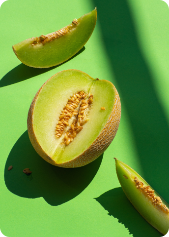
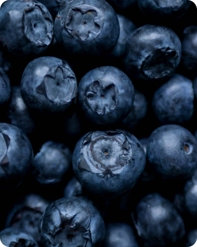
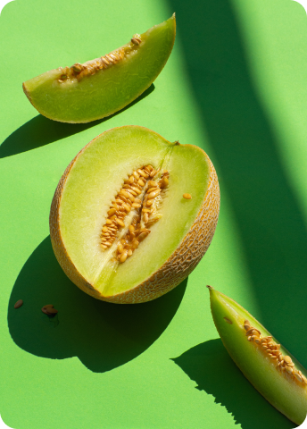
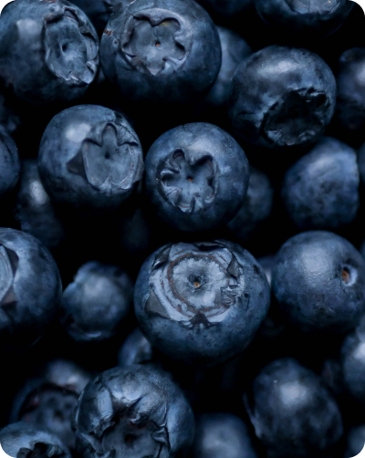

fresh harvest box — це єдине місце з кошиком смачних фруктів
Наші професійно підібрані кошики з фруктами виготовлені з найсвіжіших фруктів найвищої якості. Якщо ви шукаєте здорову закуску чи подарунок для коханої людини, Fresh Harvest Box допоможе вам.
Фрукт

Освіжаючий і соковитий кавун є ідеальним літнім ласощами та чудовим джерелом зволоження

Щоб замовити кошик із фруктами, просто виконайте ці прості кроки
Наші кошики ретельно збираються та доставляються прямо до вашого порогу, тож ви можете насолоджуватися смаком свіжих фруктів, не виходячи з дому. Незалежно від того, чи шукаєте ви здорову закуску чи продуманий подарунок, наші кошики з фруктами — ідеальний вибір.
-
Перший крок
Просто виберіть фрукти, які хочете замовити, натиснувши на прапорці поруч із ними.
-
Другий крок
Натисніть на кошик і заповніть форму.
-
Третій крок
Сядьте зручніше і розслабтеся! Ваш кошик зі свіжими фруктами буде доставлено.


Органічні фрукти
Наші органічні фрукти збираються вручну з місцевих ферм і доставляються прямо до вашого порогу, гарантуючи, що ви отримаєте найсвіжіші та найпоживніші продукти. Ми пропонуємо широкий вибір органічних фруктів, вирощених без використання шкідливих пестицидів або хімікатів.
-
Полуниця
Plant
100 UAH / kg
-
Банан
Plant
80 UAH / kg
-
Кавун
Plant
40 UAH / kg
-
Лайм
Plant
60 UAH / kg
-
Яблуко
Plant
50 UAH / kg
-
Персик
Plant
80 UAH / kg
-
Слива
Plant
40 UAH / kg
-
Апельсин
Plant
60 UAH / kg
-
Ківі
Plant
90 UAH / kg
Fresh Harvest Box допоможе вам
 



Наші коробки упаковані зі смачними, поживними фруктами та овочами, ідеальними для тих, хто хоче харчуватися здоровіше або підтримати місцевих фермерів. Замовте свою коробку сьогодні та почніть насолоджуватися найкращим, що може запропонувати природа!